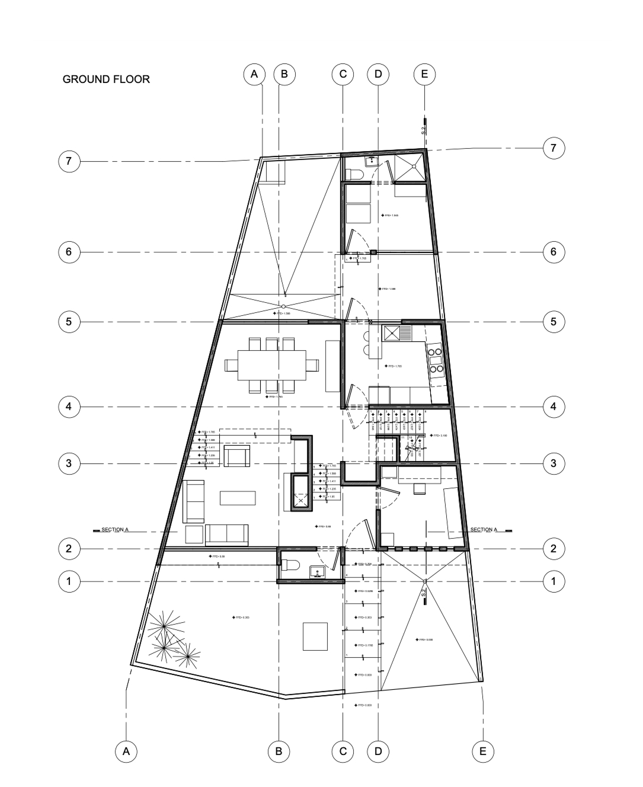
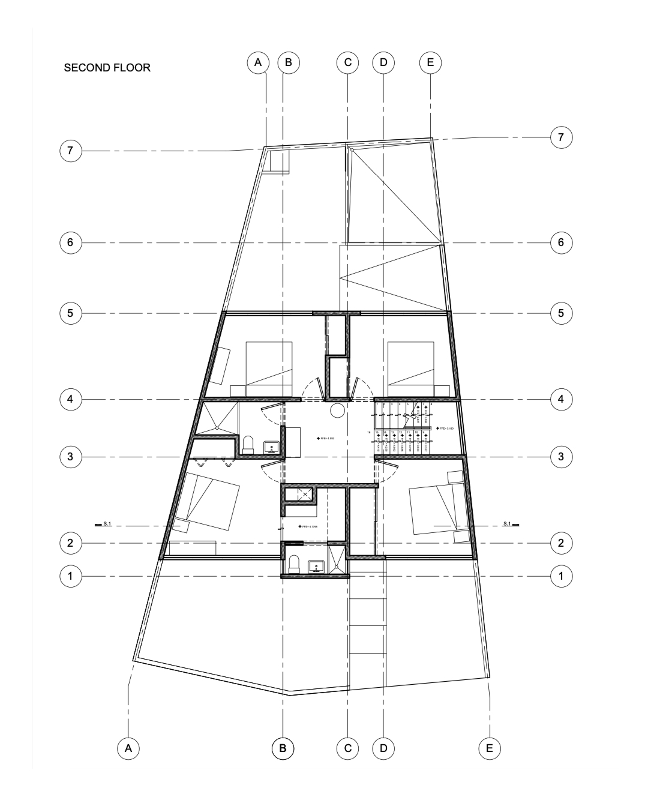
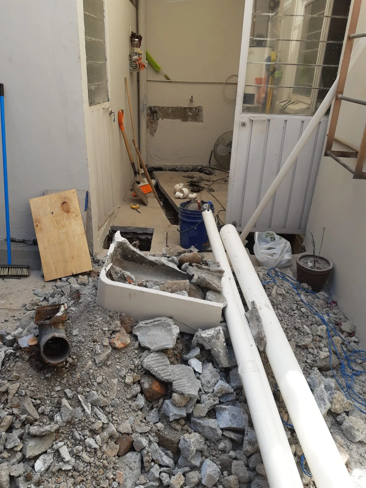
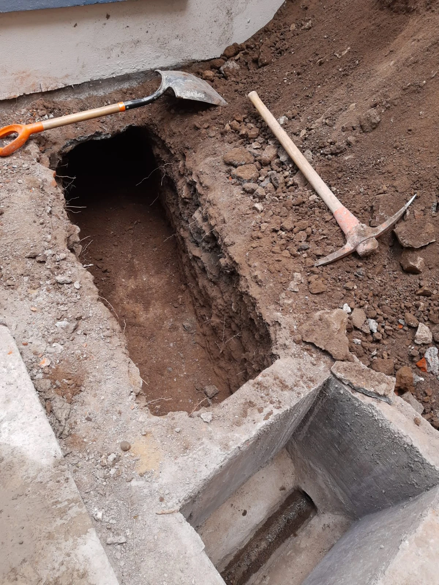
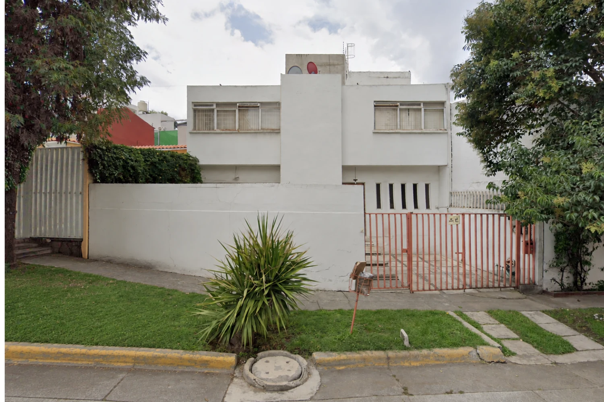
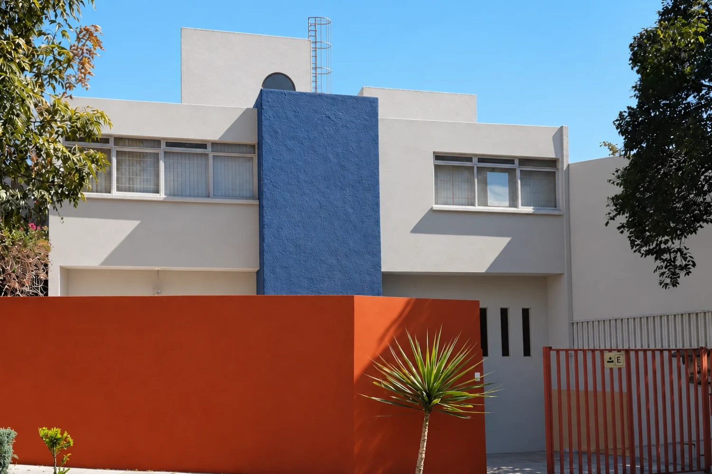

The brief
The project began with a need to document a 1960s residence and rehabilitate its existing water-storage and drainage systems. I coordinated the work from field verification and drawing production through scope definition, contractor quotations, procurement, scheduling, and quality reviews. Contractors provided trade recommendations and carried out the repairs.
Establishing the existing conditions
The original architectural drawings provided a starting point, but the house had changed since it was built. Before defining the repair scopes, I coordinated site measurements and compared the current layout with the original site information, floor plans, and roof plan. This helped identify later alterations and resolve discrepancies between the archived drawings and the building as it stood.
I redrew the residence in AutoCAD and produced updated ground-floor, second-floor, and roof plans, façade elevations, and two building sections. The resulting drawing set established a reference for the rehabilitation work.


Returning the water-storage system to service
Anticipated water-supply constraints prompted the rehabilitation of the existing below-grade concrete tank and its pumping system. I worked with contractors to define the scope, obtained and compared quotations, and developed the project budget. Once a contractor was selected, I coordinated pump and equipment selection and procurement.
The work included concrete patching and repairs, surface preparation, application of a protective epoxy coating, and installation of the new pump. I monitored progress and workmanship, coordinated water delivery to fill the tank, and arranged operational testing before the system returned to service.
Coordinating drainage repairs
The next phase addressed below-grade drainage affected by settlement-related movement. I documented the locations of the inspection chambers, traced the drainage lines and their downstream connections, and verified where the property connected to the municipal sewer.
I coordinated the repair scope with contractors and reviewed their cost estimates and proposed schedule. During implementation, I monitored progress, reviewed the work for quality, and documented it through completion.


Repairing and repainting the exterior
The rehabilitation also included patching damaged exterior wall surfaces, preparing them for painting, and repainting the repaired areas.


Managing delivery across locations
From Toronto, I managed drawing production, contractor communication, quotation comparisons, procurement, scheduling, and progress reporting. Site visits in Mexico City gave me a chance to verify conditions and resolve issues directly with contractors. I used those observations to guide remote quality reviews and confirm completion of the work within my project scope.
Project outcome
The project produced an updated drawing set, returned the water-storage system to service, and completed the coordinated drainage and exterior repairs. The drawings gave the property an updated record of its layout, and the repair documentation captured the work carried out across the building systems.